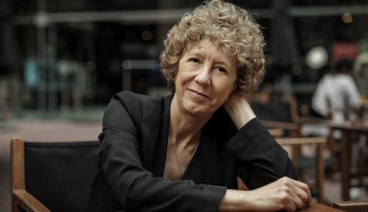
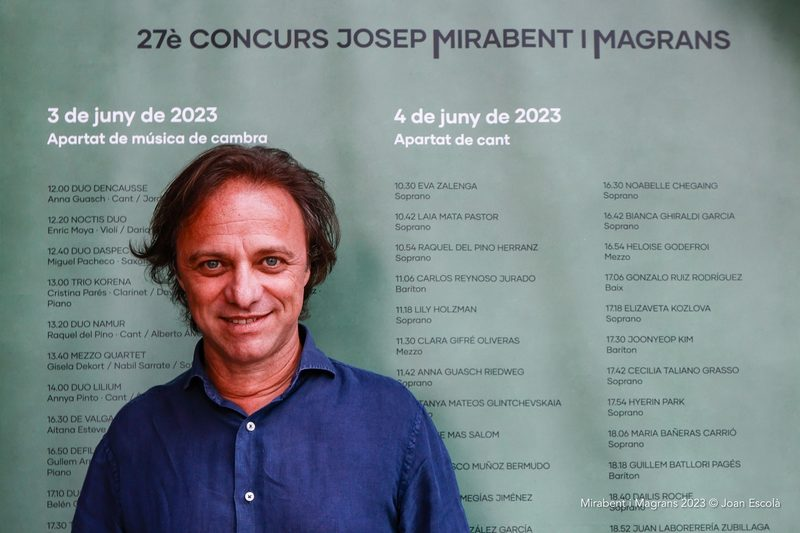
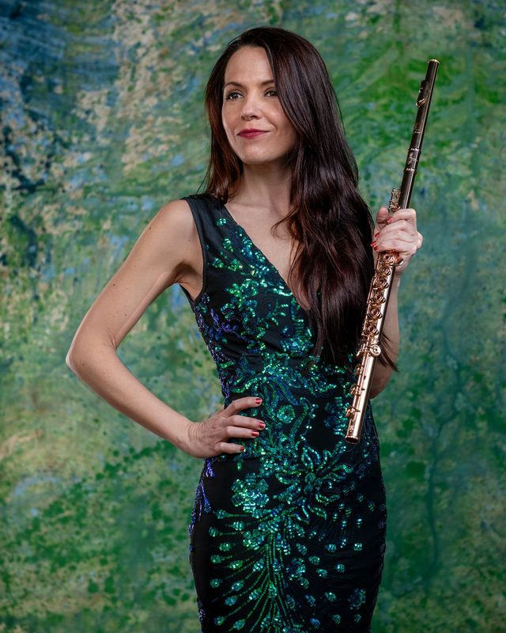
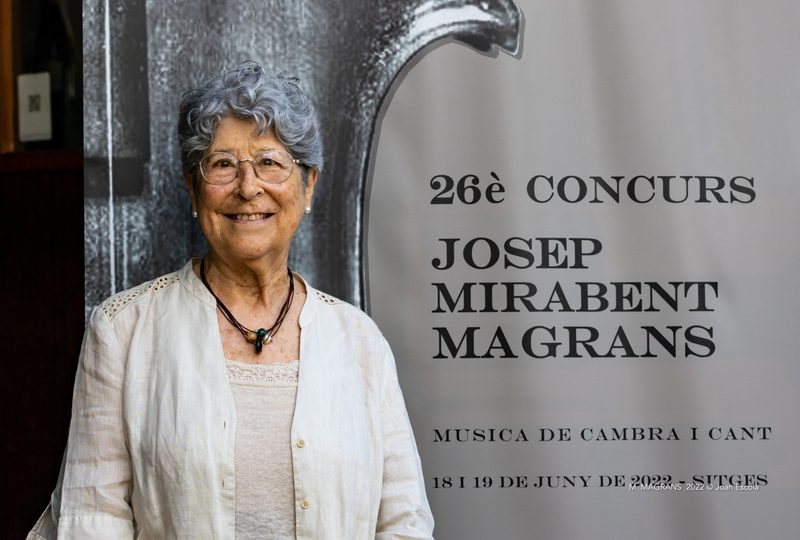
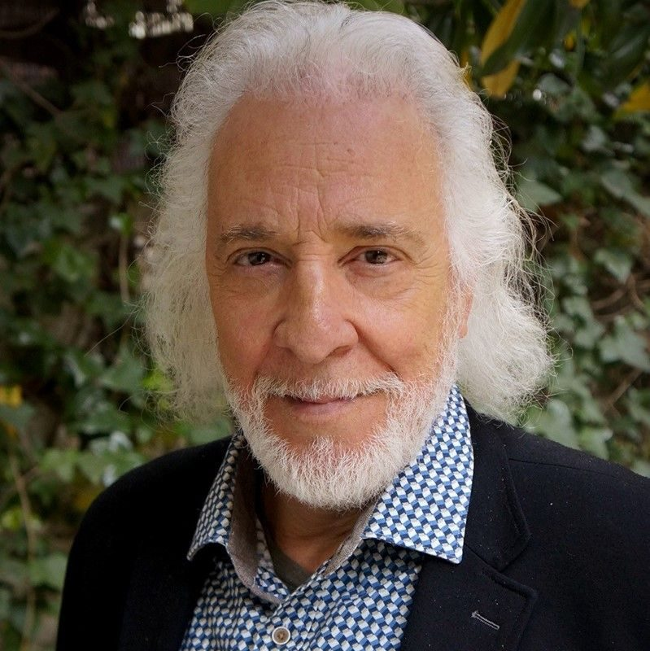

Concurs Josep Mirabent i Magrans
Edició 2026
Consulta de manera ràpida tota la informació de la convocatòria.
01 · Bases
Bases del concurs
Consulta i descarrega les bases oficials de l'edició 2026 en l'idioma que prefereixis.
02 · Calendari
Dates
Inici d'inscripcions1 de setembre de 2026
Finalització12 d'octubre de 2026
Llista de participants17 d'octubre de 2026
Concurs de cambra14 de novembre de 2026
Concurs de cant15 de novembre de 2026
03 · Reconeixement
Premis
Els premis de la 30a edició reconeixen els millors intèrprets de música de cambra i cant.
Música de cambra
1r premi
2.500 €
1.500 € + 1.000 € · Ajuntament de Sitges
2n premi
2.000 €
1.000 € + 1.000 € · Família Mirabent Magrans
3r premi
1.500 €
500 € + 1.000 € · Casino Prado Suburense
Cant
1r premi
2.500 €
1.500 € + 1.000 € · Família Mirabent Magrans
2n premi
2.000 €
1.000 € + 1.000 € · Ajuntament de Sitges
3r premi
1.500 €
500 € + 1.000 € · Casino Prado Suburense
Condicions: la segona part del segon premi correspon al caixet d'un concert a Sitges durant l'estiu de 2027. En cas que el guanyador no hi pugui actuar, perdrà aquest caixet. En cas d'ex aequo, l'import es dividirà. Els premis estan subjectes als impostos corresponents.
04 · Jurat
Jurat 2026
Música de cambra

Fotografia
CAMBRA · 03Xavier Chavarriamusicòleg i crític musical

Cant



05 · Sitges
Lloc
Casino Prado Suburense
C/ Francesc Gumà 6-14 · 08870 Sitges
La seu del Concurs Josep Mirabent i Magrans a Sitges.